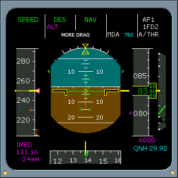

AP/FD Messages
MORE DRAG
DES mode is engaged and either:
- The airplane is above the vertical profile and the predicted intercept point is less than 2 miles from the next vertical constraint, or
- Managed speed is engaged and the airplane enters a decelerating segment which requires the use of speed brakes.
- Takeoff phase: will revert to a selected speed when the airplane reaches the ACC ALT (climb phase) provided a selected speed was preset in the PERF CLIMB page.
- Climb phase: will revert to a selected speed when the airplane reaches the cruise altitude entered in the MCDU if a selected speed was preset in the PERF CRUISE page.
|  |